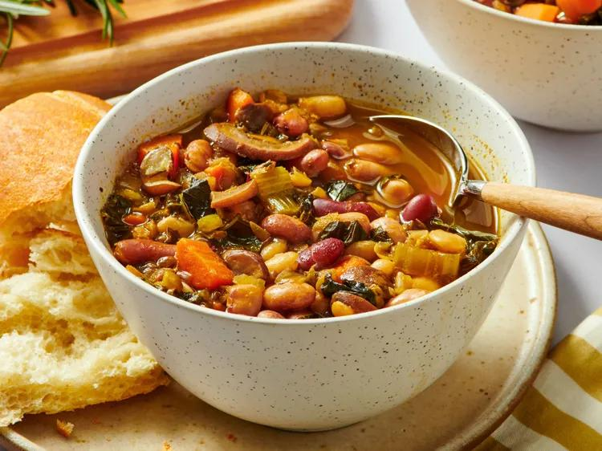

15 Bean Soup

Description
This vegetarian 15 bean soup recipe is hearty, full of flavor, and packed with protein.
15 Bean Soup is a packaged mix of dried beans sold by Hurst’s Beans. It comes in a
variety of flavors, but this recipe does not call for the flavor packet. Each package
actually contains more than 17 types of beans — but it has at least 15 of each variety.
Ingredients
- Northern beans
- Pinto beans
- Large lima beans
- Yelloweye beans
- Garbanzo beans
- Baby lima beans
- Green split peas
- Kidney beans
- Cranberry beans
- Small white beans
- Pink beans
- Small red beans
- Yellow split peas
- Lentils
- Navy beans
- White kidney beans
- Black beans
Steps
- Soak the beans overnight.
- Cook the onion in oil, then add the vegetables and garlic.
- Cook until the carrots and mushrooms are slightly tender.
- Pour broth over the mixture and bring to a boil.
- Reduce heat and add the seasonings.
- Add the beans and simmer soup until the beans are softened.
Home